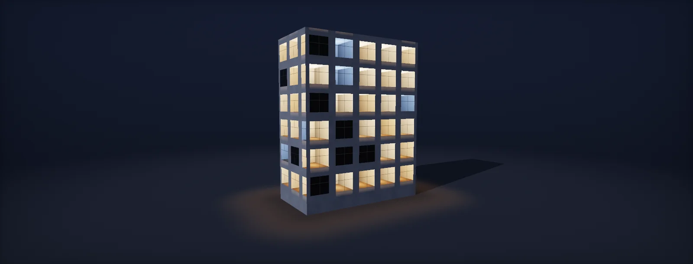

Interior Mapping
Every window on a facade can be one flat quad. The rooms behind the glass are computed per pixel from a single picture and four lines of maths. Every formula here is live, and every lab traces real rays.

Method overview
A city block has hundreds of windows. Modelling the rooms behind them costs geometry, draw calls, lights and memory, and most of it is seen for half a second from a moving camera. replaces all of that with one flat per window and a shader.
For every pixel of glass, the shader asks one question: if a box-shaped room stood behind this glass, which point of its walls would this pixel see? It answers with a tiny ray trace against an imaginary box, then looks up the colour of that point in a pre-rendered picture of a room. Nothing is behind the glass.
The pipeline has four steps; every chapter takes one apart:
- Room space: express the view direction relative to the room: across, up and into it.
- Ray against box: find which wall the sightline hits first, and where.
- Into the picture: turn that 3D wall point into a pixel position in the room render.
- Variation and light: pick a room, mirror it, add curtains, glass reflection and emission.
Before the maths, one decision shapes everything else: what the shader treats as "the room".
Room UVs
The is the patch of facade one room occupies, seen from outside: from floor slab to floor slab and from party wall to party wall. The glass is a hole cut into it. One rectangle can hold one big window, two small ones or a tiny bathroom slot.
The shader's main input, , is the position of a glass pixel inside its room rectangle, from 0 to 1 (UV coordinates). It is not 0 to 1 across the window. A small window in the middle of a wide room only gets the middle of the range:
This one choice explains two classic artefacts. If every window gets its own 0 to 1, two windows of the same office show two complete, different rooms, and a 60 cm bathroom window shows an entire squashed room. With room rectangles, both windows are holes into one shared box.
Dashed outlines are room rectangles. Filled shapes are glass. Ground floor is a shop row, then offices, then flats.
UV1 space of the selected room: the square is the room rectangle, the shapes are its glass.
The data travels to the engine in spare of the mesh, which are per-vertex data in the vertex buffer:
- UV0
- untouched, for dirt and smudges on the glass
- UV1 RoomUV
- position inside the room rectangle, 0 to 1. u runs to the viewer's right, v runs up
- UV2 RoomWH
- room width and height in meters
- UV3 RoomDS
- room depth in meters, and a random from 0 to 1
- Color.r
- room type divided by 15, which picks an atlas row (office, flat, shop)
Sizes are in real meters because the shader divides the view direction by the real room size (chapter 05). That is what lets a 6 m shop and a 3 m bathroom share one shader and both look right.
Sizes are in real metres because the shader divides the view direction by the real room size (the unit box). That lets a 6 m shop and a 3 m bathroom share one shader.
View rays
A ray is a start point and a direction; every point along it is p(t) = o + t·d, explained step by step in A ray is a formula. Tracing means finding the smallest t at which the ray touches something. Interior mapping tests it against the planes of an imaginary box, which is why it is cheap.
In a game, the GPU does the first half of the trace for free. Rasterization already found the glass pixel, so the shader knows the glass position P and the camera position C. The V = P − C (subtracting two points) is the ray's direction. Interior mapping continues that ray through the glass into the room:
Grey: the part rasterization handles (camera to glass). Teal: the part the shader traces (glass to wall). Rays that hit concrete stop at the facade.
Room space
The box maths is simple only if the axes line up with the room: x across the facade, y up, z into the room. The shader builds that frame per pixel from the surface normal: the , the and the (tangent space), built with a cross product:
float3 N = normalize(normalWS); // out, to the street float3 T = normalize(cross(N, up)); // viewer's right float3 B = cross(T, N); // up the facade float3 viewTS = float3(dot(V, T), dot(V, B), dot(V, N));
A dot product with a unit axis measures how far a vector reaches along that axis, like the length of its shadow (projection). So viewTS is the same arrow V, described as "this much to the right, this much up, this much along the normal". Seen from above:
Because N points out of the building and the camera looks in, viewTS.z is always negative for a visible window. Why not use the mesh's own tangents? Unity derives mesh tangents from UV0, while the room UVs live in UV1, so those tangents can point anywhere. The frame above depends only on the normal and world up.
T and N drawn at the glass point, B points out of the screen. Dashed lines are V's shadows on each axis.
What this window shows with the current frame.
Unit room box
Rooms come in every size. Rather than solve each room separately, the shader squashes every room into one standard : x and y from −1 to 1, z from 0 at the glass to 1 at the back wall. The start point comes from roomUV (the ·2 − 1 remap), and the direction is divided by the room's half width and depth. Here in the top view:
The minus on viewTS.z flips z: N points out, but the box's z points in. Squashing changes angles: a 45° ray in a wide, shallow room becomes steep in the box. That is correct, because the same squash applied to the room and the ray keeps every hit on the same wall at the same relative position. And d is not normalized afterwards: all wall candidates in the next chapter use the same d, so comparing their t values still picks the right wall.
Real room in meters, seen from above.
The same ray in the unit box.
Wall intersection
The ray starts on the glass and moves inward, so it can only leave the box through three faces: the side wall it moves toward, the floor or ceiling it moves toward, or the back wall. For each, ask at what t the ray reaches that plane: the slab test, simplified because the ray starts inside.
The side wall it moves toward is at x = sign(d.x). Solving o.x + t·d.x = sign(d.x) gives t = (sign(d.x) − o.x) / d.x, and since sign(d.x) / d.x is always 1/|d.x|, the shader writes it with one abs instead of a branch:
Why does the smallest t win? The box is convex and the ray starts inside, so the first plane it crosses is where it leaves. The other crossings happen later, outside the box. Why the ? Looking straight at a window makes d.x exactly 0, then 1/d.x is infinite and 0 · ∞ is NaN, which turns the pixel black or white. Clamping tiny components to 1e-5 makes it 100 000 instead, a t that never wins.
float3 d = dir; d = (abs(d) < 1e-5) ? 1e-5 : d; // avoid 0 · ∞ float3 inv = 1.0 / d; float tx = abs(inv.x) - o.x * inv.x; float ty = abs(inv.y) - o.y * inv.y; float tz = inv.z; // back wall at z = 1, o.z = 0 float t = min(min(tx, ty), tz); float3 hit = o + t * d;
Top view: x across, z into the room.
Side view: z into the room, y up.
Hit point to atlas UV
We now know the 3D point the pixel sees; we need its colour. The holds pictures of rooms, each rendered by a camera standing outside the room, centred on the opening, with a field of view that exactly fits it: , every depth line running toward the centre.
A pinhole camera shrinks things in proportion to their distance (the perspective divide). With the camera at distance c in front of the opening, a point at depth z·D behind the glass is scaled by c / (c + z·D). The shader does not know c, only b, how big the back wall looks in the picture (). From b = c / (c + D) follows D/c = 1/b − 1 = k, and the whole projection is:
Two checks prove it. A side-wall point at the glass (z = 0) gets s = 1 and lands on the edge of the image, where the opening's edge is. A back-wall corner (x = ±1, z = 1) gets s = b and lands at 0.5 ± 0.5·b, the corner of the back wall in the render. b is the entire contract between your render and your shader.
Left: render camera. Middle: the opening, which is the image plane. Right: the room. The strip at the far right is the atlas cell's vertical axis.
Changing depth at runtime
hit.z is a fraction of the room's depth, and the projection never uses D. So the back-wall corners always land at the same texels, whatever depth you feed the shader; only the positions along the side walls move. One atlas cell can serve rooms of many depths. Past roughly ±20%, furniture painted on side walls stretches visibly.
One window, rendered with the UV-grid atlas (lines every quarter of depth).
The atlas cell. Dots mark where the four window corners' rays sample it.
Back wall size and render camera
b decides how the texels of a cell are shared. The back wall is a square of side b, so it gets b² of the cell's area. Texels are also spread unevenly along the side walls: how fast the image position changes per unit of depth is the slope of s, k / (1 + z·k)²:
With b = 0.5, the back wall gets 25% of the cell and side walls are 4 times sharper near the glass than near the back. Lower b and the back wall shrinks to a few texels while side walls get a 10× falloff. Raise b and the side walls collapse into slivers that look blurry at grazing angles, which is exactly where they are seen most. 0.5 is the balance most productions settle on. Keep it identical for every cell.
b also fixes the render camera, which you need to render the atlas in the first place:
A cell rendered at this b (UV grid, lines every quarter depth).
Side-wall texels per meter of depth, 512 px cell. Dashed: b = 0.5.
Single-pixel trace
Here is the whole pipeline running on a real facade. Click any glass pixel and the panel walks through every step for that one pixel, with the actual numbers: room space, unit box, wall, picture. The small diagrams show the same ray inside the unit box, and the spot it samples in the atlas cell.
Per-room variation
Each room carries one random between 0 and 1. The shader turns it into as many independent-looking values as it needs with a , a function that scrambles its input:
Why it works: sin is smooth, so nearby inputs give nearby outputs. Multiplying by a large, irregular number like 43758.5453 magnifies tiny differences, and frac keeps only the part after the decimal point. Two seeds 0.001 apart end up anywhere in 0 to 1. Keep the sine's argument moderate: large arguments lose float precision and can hash differently on different GPUs.
Each property hashes the seed with a different multiplier (17, 31, 47…): hCell = hash(seed·17 + 1), hFlip = hash(seed·31 + 2), hLit = hash(seed·47 + 3) and so on. With one shared input, lit rooms would always be the mirrored ones.
Mirroring is the cheapest variation: a box room is symmetric, so flipping cellUV.x gives a believable different room. Keep text and signs out of the atlas, because they mirror too. Lights at dusk: a room is lit when hLit < LitChance; raising LitChance switches rooms on one by one, always in the same order.
Top: sin alone, smooth. Bottom: after × 43758.5453 and frac, scattered. Seeds 0 to 1 on the horizontal axis.
Window glass and exposure
Render the glass as an opaque Lit material, not a transparent one. The interior is computed by the shader anyway, so nothing needs to show through, and opaque surfaces write depth, receive screen-space reflections and sort correctly. The interior goes into Emission; the glass gets a dark base colour and high smoothness, so reflection probes and SSR draw the reflection.
How much reflects: Fresnel
The glass reflects more at grazing angles and lets less of the room through. Whatever does not reflect passes through, so the interior is multiplied by the 1 − F:
Reflectance against viewing angle. Solid: Schlick. Dashed: exact Fresnel (unpolarized).
How bright the room is: nits and exposure
HDRP lights in physical units. Emission is in , and the camera's exposure scales everything on screen: screen value = luminance / (1.2 · 2^EV100), explained in From EV to a multiplier. With the Emission node's exposure weight at 1, the interior is exposed like every other light: dim at noon next to a sunlit facade, glowing at night. At weight 0 it looks the same at noon and midnight.
Starting values, tune by eye: daylight interiors 100–300 nits, lamp-lit rooms 20–80 nits on top.
Curtains and cards
Any plane parallel to the glass is a free extra layer. A at depth zc is hit like the back wall, with zc instead of 1: tc = zc / d.z. It is visible only if the ray reaches it before a wall:
The check matters in narrow rooms seen at steep angles: the ray can hit a side wall before it reaches the curtain depth. Without it, the curtain draws on top of a wall that is in front of it. A zc of 0.05 to 0.1 gives curtains a little parallax against the frame. A works the same way at z ≈ 0.4: a cut-out of furniture with alpha, for hero buildings only.
The shader also darkens by depth, lerp(1, 0.6, hit.z) (lerp): a cheap stand-in for daylight falling off away from the window.
Unit box from above. Dashed amber: curtain plane.
The window from the camera.
Atlas mip seams
Inside one room, cellUV is continuous, even across wall corners. But where two rooms share one strip of glass, the atlas UV leaps from one cell to another. A quad straddling that jump sees a huge change and picks a tiny mip:
That one line of averaged colour is the seam. The fix is to hand the sampler gradients computed from something continuous. The world position is continuous everywhere, so the include projects ddx(positionWS) onto T and B, divides by the room size, scales by s and the atlas grid, and passes the result to SAMPLE_TEXTURE2D_GRAD. Bilinear filtering also reads one texel past the sample, so cellUV is clamped half a texel inside each cell.
Sampled result.
Chosen mip level, dark = 0, bright = 8.
Common bugs
Most interior-mapping bugs come from a handful of sign and space mistakes, each with a recognisable symptom. Switch one on, orbit the building, and learn the look. Then switch the view to Hit xyz: a correct shader shows a clean box gradient, red growing to the right, green growing up, blue growing with depth (colours as numbers).
- Hit xyz shows a clean box.
- Strafe past a window: the back wall moves less than the facade.
- From the far left you see the room's right wall.
- Two windows of one room show one continuous room.
- Corners line up with the render at every depth.
Level of detail
The full shader matters within roughly 50 to 100 m. Beyond that, LOD1 skips the box: it finds where the ray meets the back plane, p = o.xy + d.xy / d.z, clamps it to the back wall and samples there, one fetch at a fixed mip. LOD2 is a flat color per room plus the lit flag, which is all a city skyline needs. Both use the same hashes as LOD0, so the room's cell, mirroring and lights don't pop when the LOD group swaps. Try the LOD buttons in the lab.
Every number, explained
| Value | Default | Why |
|---|---|---|
| backWallFrac b | 0.5 | Back wall gets 25 % of the cell and side walls a 4:1 sharpness falloff. Lower starves the back wall, higher crushes the side walls into slivers. Must match the renders exactly. |
| k | 1 | Follows from b: 1/b − 1. The render camera stood one room depth in front of the glass. |
| Render FOV | 53° for 4 × 4 m | 2·atan((W/2)/c) with c = 4 m. The opening must exactly fill the frame. |
| Render lens | 36 mm on 36 mm sensor | 36·c/W with c = W = 4 m. Other room shapes give other lenses; b stays the same. |
| Epsilon | 1e-5 | 1/1e-5 = 100 000 is finite in 32-bit float and far larger than any real t, yet too small to bend a real direction. |
| DepthJitter | 0.2 | Corners stay fixed whatever the depth, side-wall content stretches. Past about ±20 % the stretch shows on furniture. |
| Room sizes | 3–6 m × 3–4.2 m × 3–6.5 m | Real meters, because the view direction is divided by them. Ground floors and shops are taller and deeper. |
| Storey heights | 4.2 m ground, 3.2 m upper | Typical floor-to-floor heights including the slab. Use what the building has. |
| Curtain depth z_c | 0.05–0.1 | 20 to 40 cm in a 4 m room: enough parallax against the frame without looking detached. |
| Midground card | z ≈ 0.4 | Far enough from the back wall for strong parallax, in front of most wall furniture. |
| Depth darkening | lerp(1, 0.6, z) | A cheap falloff of window light. 0.6 keeps the back wall readable. |
| F0 | 0.04 | ((1 − 1.5)/(1 + 1.5))² for air to glass. |
| Schlick exponent | 5 | Schlick's fit to the exact Fresnel equations. Invisible difference for glass, far cheaper. |
| Glass base color | ≈ 0.02 | Glass has almost no diffuse reflection. The interior lives in Emission. |
| Glass smoothness | 0.9–0.95 | Clean glass reflects sharply. The dirt map on UV0 lowers it locally. |
| Daylight interior | 100–300 nits | Starting point. At noon (EV ≈ 14) this sits far below a sunlit facade, like real windows do. |
| Lamp-lit room | +20–80 nits | Starting point so lit rooms glow at night (EV ≈ 5–6) without clipping. |
| Exposure weight | 1 | Emission is exposed like every other light, so day and night need no retuning. |
| Hash constants | 12.9898, 78.233, 43758.5453 | Folklore from early shader code. Any large irregular numbers work. Keep the sine argument moderate for float precision. |
| Hash multipliers | 17, 31, 47, 59, 71, 83, 97 | Different primes per property decorrelate everything derived from one seed. |
| LitChance | 0 → ~0.6 at dusk | Rooms with hLit below it are lit. Animating it switches rooms on in a fixed order. |
| CurtainChance | ≈ 0.55 | Share of rooms with a curtain. Each then picks one of four states from hState. |
| Half-texel inset | 0.5 / cell size | Bilinear filtering reads one texel past the sample. The inset keeps it inside the cell. |
| Atlas grid | 4 × 3 here | Columns are variants picked by hCell, rows are room types picked by vertex color. |
| Room type encoding | type / 15 | Sixteen types fit an 8-bit vertex color with an exact round trip. Decode with round(r · 15). |
| Window frame | 6 cm | Visual only. Frames hide the hard edge where the interior starts. |
| LOD distance | 50–100 m | Past that, side walls are a few pixels wide and LOD1 looks the same. |
| PLANE_TOL | 0.6 m | Blender script: glass may sit this far from its room plane, for recessed windows. |
| EDGE_TOL | 0.01 m | Blender script: slack for glass that touches a room edge. |
Build it in Unity HDRP
The complete shader as one Custom Function file, a Lit graph that wires it to the mesh data, and an editor helper that writes room data into the UV channels of a simple facade. Names follow the unit: RoomUV in UV1, RoomWH in UV2, RoomDS in UV3, room type in vertex colour red. Written for Unity 6 with HDRP 17; Unity 2022 LTS works the same apart from a few renamed menu entries.
- Render or paint the atlas: cells in a grid (for example 4 columns × 4 rows), each a one-point-perspective room rendered with the back wall filling the fraction
bof the cell (0.5). Import it as a colour texture with mipmaps. - Prepare the facade mesh: every glass quad needs RoomUV, RoomWH, RoomDS and the room type, as in Rooms, not windows. Author them in your DCC, or add
FacadeRooms.csto the facade object and use Bake room data from its context menu (it assumes separate glass quads on a flat, axis-aligned facade). - Create the graph: in the Project window, Create > Shader Graph > HDRP > Lit Shader Graph. Open it and check the Graph Inspector > Graph Settings.
- Add UV nodes for channels
UV1,UV2andUV3, a Vertex Color node, Position (World), Normal Vector (World) and View Direction (World). - Save
InteriorMapping.hlsl. In the graph, add a Custom Function node. Set Type toFile, Source toInteriorMapping.hlsland Name toInteriorMapping(without the_floatsuffix). Add the inputs Atlas (Texture2D), SS (SamplerState), PositionWS (Vector 3), NormalWS (Vector 3), ViewDirWS (Vector 3), RoomUV (Vector 2), RoomWH (Vector 2), RoomDS (Vector 2), RoomType (Float), AtlasGrid (Vector 2), BackWallFrac (Float), LitChance (Float) and the outputs Interior (Vector 3), Lit (Float), Transmission (Float), in that order and with those types: they must match the function's parameters. - Connect RoomUV = UV1.xy, RoomWH = UV2.xy, RoomDS = UV3.xy, RoomType = Vertex Color R × 15 (rounded). Interior × lerp(darkness, 1, Lit) × Transmission goes into an Emission node (Intensity Unit
Nits, about 150; Exposure Weight 1), then into Emission. - Glass: Base Color near black (0.02), Smoothness 0.95, Metallic 0. Reflections come from HDRP's reflection probes and SSR, so the material stays opaque.
#ifndef ATLAS_INTERIOR_MAPPING_INCLUDED
#define ATLAS_INTERIOR_MAPPING_INCLUDED
float AtlasHash(float n) { return frac(sin(n * 12.9898 + 78.233) * 43758.5453); }
// RoomUV: position inside the room rectangle (0..1). RoomWH: width, height in metres.
// RoomDS: depth in metres, random seed. RoomType: atlas row. AtlasGrid: (columns, rows).
// BackWallFrac: b, the size of the back wall in every atlas cell.
void InteriorMapping_float(UnityTexture2D Atlas, UnitySamplerState SS,
float3 PositionWS, float3 NormalWS, float3 ViewDirWS,
float2 RoomUV, float2 RoomWH, float2 RoomDS, float RoomType,
float2 AtlasGrid, float BackWallFrac, float LitChance,
out float3 Interior, out float Lit, out float Transmission)
{
// room space: T across the facade, B up, N out to the street
float3 N = normalize(NormalWS);
float3 T = normalize(cross(N, float3(0, 1, 0)));
float3 B = cross(T, N);
float3 V = -normalize(ViewDirWS); // camera to glass
float3 vTS = float3(dot(V, T), dot(V, B), dot(V, N)); // z < 0 for visible glass
// the unit box: x, y in -1..1, z from 0 (glass) to 1 (back wall)
float W = max(RoomWH.x, 0.01), H = max(RoomWH.y, 0.01), D = max(RoomDS.x, 0.01);
float3 o = float3(RoomUV * 2.0 - 1.0, 0.0);
float3 d = float3(vTS.x / (W * 0.5), vTS.y / (H * 0.5), -vTS.z / D);
d = (abs(d) < 1e-5) ? 1e-5 : d; // avoid 0 * infinity
// the wall: smallest t of the three planes the ray moves toward
float3 inv = 1.0 / d;
float tx = abs(inv.x) - o.x * inv.x;
float ty = abs(inv.y) - o.y * inv.y;
float tz = inv.z;
float t = min(min(tx, ty), tz);
float3 hit = o + t * d;
// into the picture: perspective of the render camera, set by b
float b = clamp(BackWallFrac, 0.05, 0.95);
float k = 1.0 / b - 1.0;
float s = 1.0 / (1.0 + hit.z * k);
float2 cellUV = hit.xy * s * 0.5 + 0.5;
// variation from one seed
float seed = RoomDS.y;
float hCell = AtlasHash(seed * 17.0 + 1.0);
float hFlip = AtlasHash(seed * 31.0 + 2.0);
float hLit = AtlasHash(seed * 47.0 + 3.0);
float flip = hFlip > 0.5 ? -1.0 : 1.0;
if (flip < 0) cellUV.x = 1.0 - cellUV.x;
Lit = hLit < LitChance ? 1.0 : 0.0;
// atlas cell (row 0 at the bottom), clamped half a texel inside the cell
float2 cell = 1.0 / AtlasGrid;
float2 halfTexel = 0.5 * Atlas.texelSize.xy * AtlasGrid;
cellUV = clamp(cellUV, halfTexel, 1.0 - halfTexel);
float2 index = float2(floor(hCell * AtlasGrid.x), clamp(RoomType, 0, AtlasGrid.y - 1));
float2 uv = (index + cellUV) * cell;
// gradients from the continuous world position, so seams between rooms keep their mip
float3 dpx = ddx(PositionWS), dpy = ddy(PositionWS);
float2 gx = float2(dot(dpx, T) / W * flip, dot(dpx, B) / H) * s * cell;
float2 gy = float2(dot(dpy, T) / W * flip, dot(dpy, B) / H) * s * cell;
Interior = SAMPLE_TEXTURE2D_GRAD(Atlas.tex, SS.samplerstate, uv, gx, gy).rgb;
// glass: what Fresnel does not reflect passes through
float cosV = saturate(dot(N, normalize(ViewDirWS)));
Transmission = 1.0 - (0.04 + 0.96 * pow(1.0 - cosV, 5.0));
}
#endifusing UnityEngine;
// Writes room data for interior mapping into a copy of this object's mesh.
// Assumes every window is a separate quad and the facade is flat and vertical.
[RequireComponent(typeof(MeshFilter))]
public class FacadeRooms : MonoBehaviour
{
public float roomWidth = 4f; // party wall to party wall, metres
public float floorHeight = 3f; // slab to slab
public float roomDepth = 5f;
public int groundFloorType = 2; // atlas row for the ground floor (shops)
public int upperFloorType = 0; // atlas row for the floors above (offices)
[ContextMenu("Bake room data")]
void Bake()
{
var mf = GetComponent<MeshFilter>();
Mesh src = mf.sharedMesh;
Mesh m = Instantiate(src);
m.name = src.name + "_Rooms";
Vector3[] v = m.vertices;
Vector3[] n = m.normals;
int[] tri = m.triangles;
var roomUV = new Vector2[v.Length];
var roomWH = new Vector2[v.Length];
var roomDS = new Vector2[v.Length];
var color = new Color[v.Length];
for (int i = 0; i < tri.Length; i += 3)
{
// decide the room from the triangle's centre, so a window never straddles two rooms
Vector3 c = (v[tri[i]] + v[tri[i + 1]] + v[tri[i + 2]]) / 3f;
Vector3 N = n[tri[i]].normalized;
Vector3 T = Vector3.Cross(N, Vector3.up).normalized; // same frame as the shader
float cx = Vector3.Dot(c, T), cy = c.y;
int rx = Mathf.FloorToInt(cx / roomWidth), ry = Mathf.FloorToInt(cy / floorHeight);
float seed = Mathf.Repeat(Mathf.Sin(rx * 12.9898f + ry * 78.233f) * 43758.5453f, 1f);
int type = ry == 0 ? groundFloorType : upperFloorType;
for (int k = 0; k < 3; k++)
{
int vi = tri[i + k];
float px = Vector3.Dot(v[vi], T), py = v[vi].y;
roomUV[vi] = new Vector2(px / roomWidth - rx, py / floorHeight - ry);
roomWH[vi] = new Vector2(roomWidth, floorHeight);
roomDS[vi] = new Vector2(roomDepth, seed);
color[vi] = new Color(type / 15f, 0, 0, 1);
}
}
m.SetUVs(1, roomUV);
m.SetUVs(2, roomWH);
m.SetUVs(3, roomDS);
m.colors = color;
mf.sharedMesh = m;
#if UNITY_EDITOR
string path = UnityEditor.AssetDatabase.GenerateUniqueAssetPath("Assets/" + m.name + ".asset");
UnityEditor.AssetDatabase.CreateAsset(m, path);
Debug.Log("Saved " + path);
#endif
}
}The baker works in the mesh's own space, so keep the object unrotated or bake before rotating it. For real buildings, room data is usually authored per window in Houdini or Blender, where room rectangles can follow the actual floor plan. Amplify Shader Editor: paste the function body into a Custom Expression node (mode Call with the file included, or Create with the code inline); inputs and outputs map the same way.
Same file and graph (Lit, URP). URP has no Emission node with nits: multiply the interior by an intensity and connect it to Emission directly; URP uses no physical exposure by default, so a value around 1–2 reads well.
Put the function body in a Custom node; RoomUV etc. come from TexCoord[1..3] and VertexColor, the view vector from -CameraVector, the gradients from DDX/DDY of Absolute World Position and TextureSampleGrad (or the Custom node's Texture2DSampleGrad). Unreal also ships an InteriorCubemap material function for the cubemap variant.
Sources and further reading
The formulas and engine details in this unit come from these references. Engine documentation changes between versions.
- PaperInterior Mapping: A new technique for rendering realistic buildingsJoost van Dongen · Computer Graphics International 2008The original technique: rays traced against implicit room planes behind a facade.
- DocsDevelopment Kit Gems: Interior MappingEpic Games · UDKA material-graph version of the same idea, useful when porting to Unreal.
- ArticleIntersectorsInigo QuilezCompact ray-box and other intersection functions, including the slab test.
- NotesReal Shading in Unreal Engine 4Brian Karis · SIGGRAPH 2013Schlick Fresnel with F0 in a production shading model.
- DocsCamera-relative renderingUnity · HDRP 17Why world positions in HDRP shaders are relative to the camera.